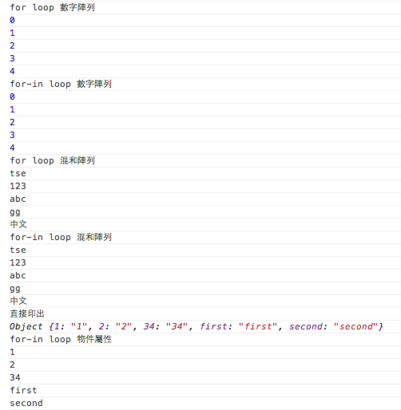
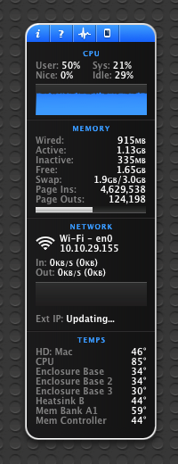

比較for loop與for-in loop與效能實戰
for loop 介紹
引用W3C school上的內容
Loops are handy, if you want to run the same code over and over again, each time with a different value.
Often this is the case when working with arrays:
這邊他也特別說明幾種迴圈，引用上面的出處的內容
- for - loops through a block of code a number of times
- for/in - loops through the properties of an object
- while - loops through a block of code while a specified condition is true
- do/while - also loops through a block of code while a specified condition is true
這邊很簡單的說明了一般For,while,do/while 這三個類型的loop都是可以取得一整群物件或是重復做某動作時使用，只有for/in 是取得物件內屬性(properties)時使用
在使用for/in loop的時候需要注意因為物件屬性在被存入物件的時候會以key-value的方式存放，物件內屬性排序是依照屬性名稱去排序的，有時會發生你宣告的順序與讀出的順序不同的情況，如下：
//變數宣告
var items=[1,2,3,4,5],
items_ch=["tse","123","abc","gg","中文"],
item={
"first":"first",
"2":"2",
"34":"34",
"1":"1",
"second":"second"
};上面三種物件只有item是單一物件其他都是陣列的方式，這邊使用for loop與for-in loop來比較一下呈現結果

可以看到在讀出屬性時他的順序的確是按照key值去排序，而不是按照我們宣告的順序(properties本來宣告也就沒再分順序)，使用時要稍微注意一下
更有效的使用for loop
原始的迴圈版本
for(var i=0;i<items.length;i++){
}調整1：將items.length宣告成一個變數，並讓迴圈的判斷改成每次去比對該變數
for(var i=0;i<items.length;i++){
}調整2：將迴圈改為遞減至0
for(var i=items.length;i>0;i--){
}調整3:透過while迴圈改善
var i=items.length;
while(i--){
}三者的實際比較可以看下圖(測試的電腦為mac air 2011 cpu i5，1.7 GHz (i5-2557M) dual-core Intel Core i5 with 3 MB shared L3 cache)

這邊也額外加上了for-in loop的比較，由此可知錯用for-in loop來跑真的是一件很可怕的事情….(跟原本的迴圈比降低了90%以上的效能)
而改善二跟改善三在我桌機上(i7 3770) 基本上秒數是一樣差不了太多，效能改善跟原本的相比改善二跟改善三大概差了1%左右
結語
以自己開發上來說我會盡量作改善三，少部分情況我也會只做改善一而已(迴圈內數量不大且沒雙層迴圈的情況)
小小的一個迴圈可能就可以讓你的程式效能差距甚遠，改善一只是將變數往前提出宣告就可以進步10%的效能，這可能是CP值最高的必修項目了
，而如果你錯用for-in再跑迴圈的話可能會跑到哭出來，在這邊分享心得給大家一下摟，如果有更好的寫法也麻煩提出建議讓小弟也學習一下～！
題外話 - 撰寫CPU保持使用率在50%的程式
因為在跑for loop 每次透過console.log印出結果時發現CPU會飆到100％，這時我想到幾年前看過一個號稱是微軟面試程式人員的題目，要面試人員寫出一個可以讓CPU維持50%運作情況的程式，這邊我們可以透過for loop + setTimeout 來作，程式如下：
setInterval("doLoop()",300);
function doLoop(){
console.log("do looping...");
//變數宣告與前置處理
var items=[];
for(var i=0;i<5150;i++){
items.push(i);
}
for(var i=0,itemLength=items.length;i<itemLength;i++){
console.log("");
}
}Mac的用戶可以用iStat pro來看，結果截圖如下:

記得那個題目還有波形，三角形與長方形等應用，其實都是透過讓CPU飆上去再讓他idle控制CPU使用量的波形，有興趣的人可以去做做看摟